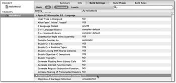
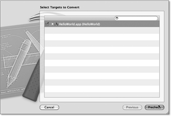
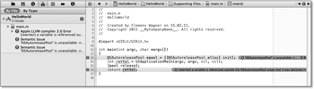
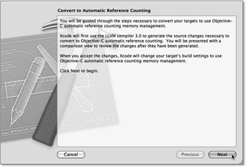
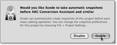
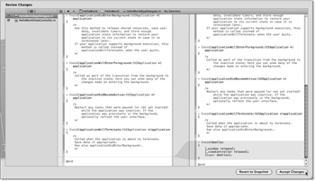

Zum Online-Shop
Zum Online-Shop
2.5 Automatisches Referenzenzählen
Die LLVM-Compiler ab Version 3.0 stellen mit dem Automatic Reference Counting (ARC) eine Erweiterung des bestehenden Speicherverwaltungssystems zur Verfügung. Auch wenn es erst mit Xcode 4.2 und iOS 5 zum Standardumfang des SDKs gehört, soll es laut Aussage von Apple bereits unter iOS 4.0 bei Benutzung geeigneter Compiler funktionieren. Das Automatic Reference Counting ist keine Erweiterung des Laufzeitsystems, sondern eine reine Compilererweiterung.
Die Idee, die dahinter steht, ist einfach, aber brillant. Die Speicherverwaltungsregeln sind einfach und maschinell überprüfbar. Mit dem Analyzer (siehe Kapitel 3) steht Ihnen sogar ein Tool zur Verfügung, mit dem Sie eine Menge Speicherverwaltungsfehler automatisiert entdecken können. Die Idee von ARC ist, die Verfahren des Analyzers zu verwenden, um die Speicherverwaltungsanweisungen mit der Übersetzung automatisch in den Code einzufügen.
Laut Apple sorgt der Compiler mit ARC aber nicht nur für eine korrekte Speicherverwaltung, sondern auch für fulminant schnelleren Code.
| War alles umsonst? |
|
Sie haben mit dem Automatic Reference Counting eine starke Vereinfachung in der Speicherverwaltung, die Ihnen die Programmierung erheblich erleichert. Es ist aber keine neue Speicherverwaltung, da der Compiler Ihren Code um die notwendigen Speicherverwaltungsanweisungen erweitert. Für eine sinnvolle Verwendung der ARC-Erweiterung ist also das Verständnis der Speicherverwaltung nach wie vor unerlässlich. |
2.5.1 Zurück in die Zukunft
Wie bereits erwähnt, analysiert beim automatischen Referenzenzählen der Compiler den Programmcode und ergänzt ihn um die notwendigen Anweisungen, damit bei der Ausführung des Programms weder Speicherlecks noch Dangling Pointer entstehen. Da ja mehrere Köche bekanntlich den Brei verderben, bedeutet das im Umkehrschluss für Sie, dass Sie aber auch Ihre Finger von der Speicherverwaltung zu lassen haben. Sie dürfen die Methoden retain, release und autorelease weder aufrufen noch in Ihren Klassen überschreiben. Außerdem ist das Anlegen und Verwenden von Objekten der Klasse NSAutoreleasePool strengstens untersagt. Zuwiderhandlungen werden mit Übersetzungsfehlern geahndet.
Eine ARC-konforme Methode könnte also so aussehen:
- (NSString *)newName {
return [NSString stringWithFormat:@"%@ %@", self.firstName, self.lastName];
}
Der ARC-Compiler bemerkt den Verstoß gegen die erste Speicherverwaltungsregel und korrigiert den Code während der Übersetzung, indem er ein retain einfügt:
- (NSString *)newName {
return [[NSString stringWithFormat:@"%@ %@", self.firstName, self.lastName] retain];
}
Bei Methoden, deren Name nicht auf die erste Speicherverwaltungsregel passt, sieht die Korrektur etwas komplizierter aus. Aus
- (NSNumber *)age {
return age;
}
erzeugt der ARC-Compiler (Änderungen hervorgehoben):
- (NSString *)age {
NSNumber *theAge = [age retain];
return [theAge autorelease];
}
Der Compiler sendet hier also ein retain an den Ergebniswert nach dessen Erzeugung – und beim Verlassen der Methode ein autorelease. Der Compiler verhält sich hier also wie ein synthetischer Getter einer atomaren Property.
Der ARC-Compiler achtet natürlich auch bei Methodenaufrufen auf die richtige Speicherverwaltung. Er wandelt
NSLog(@"name = %@", [thePerson newName]);
in
NSString *theName = [thePerson newName]
NSLog(@"name = %@", theName);
[theName release];
um und verwendet hier keinen Autoreleasepool, sondern eine direkte Freigabe über release.
2.5.2 Weakie und die starken Zeiger
Das sieht ja bis jetzt alles noch recht einfach aus. Bei Variablen ist es jedoch etwas komplizierter. Wenn Sie eine Variable oder ein Attribut deklarieren, setzt der Compiler es auf nil. Außerdem verhält sich die Variable immer wie eine haltende Referenz, die am Ende ihres Gültigkeitsbereiches (Blocks) wieder freigegeben wird. Die Deklaration
{
NSString *theName;
...
}
wandelt der Compiler bei der Übersetzung in
{
__strong NSString *theName = nil;
...
[theName release];
}
um. Bei Attributen erzeugt der Compiler die release-Anweisung natürlich nicht im Block, sondern im dealloc der Klasse.
Der Speicherverwaltungstyp __strong legt dabei fest, dass die Variable den referenzierten Wert hält. Die Initialisierung mit nil erhöht die Stabilität Ihres Codes, da Sie dadurch an die Objektreferenz eine Nachricht senden können, ohne sie explizit vorher zu initialisieren. Die Zuweisung ist außerdem für das korrekte Funktionieren von Zuweisungen notwendig. Denn aus ...
theName = theNewName;
... erzeugt der Compiler:
[theNewName retain];
NSString *theOldName = theName;
theName = theNewName;
[theOldName release];
Ohne die Initialisierung auf nil enthielte die letzte Zeile in der Regel einen Dangling Pointer.
Das Gegenstück zu __strong ist __weak. Es legt fest, dass die Variable das Objekt nicht hält. Sie müssen diesen Typ natürlich immer explizit angeben. Trotzdem erweitert der Compiler auch hierbei Ihren Programmcode, da das Laufzeitsystem schwache Referenzen automatisch auf nil setzt, wenn das Programm die Methode dealloc des Objekts aufruft. Dazu verwendet ARC spezielle Funktionen aus der Laufzeitbibliothek. Aus
__weak NSString *theName = name;
NSUInteger theLength = [theName length];
erzeugt der Compiler:
__weak NSString *theName = nil;
objc_storeWeak(&theName, name);
NSUInteger theLength = [objc_readWeak(&theName) length];
objc_storeWeak(&theName, nil);
Analog zu den Modifizierern __strong und __weak gibt es die entsprechenden Parameter strong und weak für Propertys. Dabei ist strong nur ein Synonym für retain. Der ARC-Compiler erzeugt automatisch bei Propertys mit den Typen copy, retain und strong die entsprechende Freigabeanweisung in der dealloc-Methode der Klasse. Sie brauchen diese Methode also nur noch in Ausnahmefällen selber zu implementieren.
| Propertys und das Automatic Reference Counting |
|
Der neue Speicherverwaltungstyp weak verhindert die Entstehung von Dangling Pointern. Wenn Sie ihn anstatt assign verwenden, setzt die Laufzeitumgebung den Property-Wert automatisch auf nil, wenn Ihr Programm das referenzierte Objekt freigibt. Sie können natürlich retain und copy wie gewohnt weiterverwenden. Allerdings ist die Verwendung von strong anstelle von retain bezüglich weak stringenter.
|
Der ARC-Compiler sorgt natürlich auch dafür, dass ein Objekt am Ende seines Lebens seine Verweise auf andere Objekte freigibt. Er erzeugt also automatisch eine dealloc-Methode. Sie dürfen aber auch weiterhin dealloc überschreiben und für die Freigabe anderer Ressourcenarten (z. B. Filehandles, Registrierungen als Beobachter, Sockets und Streams) verwenden. Der ARC-Compiler fügt am Ende einer dealloc-Methode automatisch den Aufruf der Supermethode ein, und Sie brauchen das nicht mehr zu tun. In einer ARC-Umgebung ist überall der explizite Aufruf von dealloc verboten.
Es gibt noch zwei weitere mögliche Speicherverwaltungstypen. Durch den Modifizierer __unsafe_unretained können Sie erreichen, dass sich eine Variable wie ein gewöhnlicher Zeiger in C verhält. Der Compiler verändert den Code für diese Variablen also nicht.
Der Modifizierer __autoreleasing veranlasst den Compiler, ein retain und ein autorelease bei der Zuweisung an den Wert zu senden. Er ist der Standardtyp für Ausgabeparameter – also Zeiger auf Objektreferenzen. Ein typisches Beispiel dafür sind Fehlerobjekte, die viele Cocoa-Methoden zurückgeben:
- (void)readWithError:(NSError **)outError {
...
if(!success) {
*outError = ...;
}
}
Das übersetzt der Compiler in:
- (void)readWithError:(__autoreleasing NSError **)outError {
...
if(!success) {
*outError = [[... retain] autorelease];
}
}
2.5.3 Autoreleasepools
Wie eingangs erwähnt, dürfen Sie bei der Verwendung des Automatic Reference Countings keine Autoreleasepools über die Klasse NSAutoreleasePool mehr anlegen. In der Regel müssen Sie das in Objective-C damit sowieso selten machen. Die Verwaltung von Autoreleasepools geschieht in der ARC-Umgebung durch @autorelease { ... }, das deren Handhabung vereinfacht. Es gibt drei wichtige Situationen, in denen Sie einen Pool verwalten müssen.
Die main-Funktion
Die main-Funkion legt Xcode bei der Erzeugung eines neuen Projekts automatisch für Sie an. Unter Umständen müssen Sie das aber in Ihren alten Programmen abändern. Die Funktion sieht mit einem ARC-Compiler so aus:
int main(int argc, char *argv[]) {
@autoreleasepool {
return UIApplicationMain(argc, argv, nil, nil);
}
}
Listing 2.60 »main«-Funktion mit »@autoreleasepool«
Threads
Ein Thread ist ein eigenständiger Ausführungsstrang in einem Programm. Über Threads können Sie erreichen, dass Ihr Programm mehrere Aufgaben gleichzeitig erledigt. Safari unter OS X kann beispielsweise eine Datei herunterladen, während Sie mit dem Browser durch das Internet surfen.
Jeder Thread braucht einen eigenen Autoreleasepool. Das galt auch schon vor ARC. Allerdings gibt es in Cocoa elegantere Möglichkeiten als Threads, um nebenläufige Programme zu schreiben. Multithreading macht in vielen Fällen auch erst auf Mehrprozessorsystemen Sinn. Falls Sie aber dennoch einen eigenen Thread starten möchten, ist hier ein Gerüst dafür:
- (void)startParsingWithFile:(NSString *)inPath {
[self perfomSelectorInBackground:@selector(parseWithFile:)
withObject:inPath];
}
- (void)parseWithFile:(NSString *)inPath {
@autoreleasepool {
...
}
}
Listing 2.61 Starten eines Threads
Vermeidung von Speicherüberläufen
Die exzessive Nutzung des Autoreleasepools kann zu einem Speicherüberlauf führen, obwohl Sie sich strikt an die Speicherverwaltungsregeln gehalten haben. Das liegt daran, dass der Autoreleasepool alle Objekte hält, bis Sie oder das Betriebssystem ihn leeren. Sie können aber Autoreleasepools ineinander verschachteln. Dann sammelt immer der innerste Pool die Objekte auf, denen Sie ein autorelease senden. Dadurch können Sie ein zu starkes Anwachsen des Berges der nicht mehr verwendeten Objekte verhindern. Da dieses Problem häufig bei großen Schleifen auftritt, reicht es da häufig aus, einen Autoreleasepool innerhalb der Schleife zu platzieren:
- (void)parseFiles:(NSArray *)inFiles {
for(NSString *theFile in inFiles) {
@autoreleasepool {
[self parseFile:theFile];
}
}
}
Listing 2.62 Geschachtelter Autoreleasepool
2.5.4 Einzelgänger
Die Richtlinien für ARC-konformen Programmcode untersagen Ihnen nicht nur die Verwendung der Methoden retain, release und autorelease, sondern auch das Überschreiben dieser Methoden. Das müssen Sie in der Regel sowieso selten machen. Für die Implementierung des Singleton-Entwurfsmusters beim manuellen Referenzenzählen überschreibt man in der Regel diese Methoden, um sicherzustellen, dass es nur ein Objekt der Klasse gibt.
| Pattern oder Antipattern? |
|
Singletons gehören zu den 23 Entwurfsmustern, die Gamma, Helm, Johnson und Vlissides
– die Gang of Four – in ihrem Buch über Entwurfsmuster[13](E. Gamma, R. Helm, R. Johnson, J. Vlissides: Entwurfsmuster. Elemente wiederverwendbarer objektorientierter Software, Addison-Wesley, München 2004) beschrieben haben. Allerdings betrachtet inzwischen auch eine große Anzahl von Entwicklern
dieses Muster als Antipattern. Sogar Erich Gamma sieht das Muster inzwischen anscheinend kritisch:
|
Die einfachste Möglichkeit für die Implementierung eines Singletons ist eine Klassenmethode und eine statische Variable. Die statische Variable verweist dabei auf das Objekt und hält es im Speicher.
@implementation MySingleton
+ (id)sharedInstance {
static id sharedInstance;
if (sharedInstance == nil) {
sharedInstance = [[MySingleton alloc] init];
}
return sharedInstance;
}
...
@end
Listing 2.63 Einfaches Singleton, über eine Klassenmethode implementiert
Ein Singleton sollte immer sicherstellen, dass es nur ein Objekt seiner Klasse gibt. Sie können das erreichen, indem Sie die Methode allocWithZone: überschreiben.
+ (id)allocWithZone:(NSZone *)inZone {
static id sharedInstance;
if(sharedInstance == nil) {
sharedInstance = [super allocWithZone:inZone];
}
return sharedInstance;
}
+ (id)sharedInstance {
return [[[self class] alloc] init];
}
Listing 2.64 Singleton-Erzeugung in »allocWithZone:«
Bei dieser Lösung können Sie auf das Singleton wie auf jedes andere Objekt auch zugreifen. Sie legen es einfach durch eine alloc-init-Kette an. Sie müssen also nicht unbedingt die Methode sharedInstance aus Listing 2.64 dazu verwenden. Sie können diese Implementationsvariante dazu verwenden, um die Singleton-Eigenschaft einer Klasse zu verstecken.
2.5.5 Migration bestehender Projekte
Das Verbot der drei Speicherverwaltungsmethoden retain, release und autorelease führt natürlich zu Programmcode, der ohne ARC eine fehlerhafte Speicherverwaltung hat. Da der Compiler nach wie vor auch die manuelle Speicherverwaltung unterstützt, müssen Sie ihm mitteilen, um welche Art von Code es sich handelt. Dazu gibt es das Kommandozeilenflag –fobjc-arc beziehungsweise die Einstellung Objective-C Automatic Reference Counting in den Build Settings des Programm-Targets (siehe Abbildung 2.39):
Abbildung 2.39 Automatisches Referenzenzählen einschalten
Um Ihren bestehenden Code für das automatische Referenzenzählen umzuwandeln, können Sie in Xcode 4.2 den Menüpunkt Edit · Refactor · Convert to Objective-C ARC... aufrufen. Stellen Sie aber vorher das Schema auf den iPhone Simulator um (siehe Abbildung 2.40). Dadurch können Sie einen Fehler bei der Migration verhindern.
Abbildung 2.40 Umstellen des Schemas auf den iPhone Simulator
Nach dem Aufruf des Menüpunkts fragt Xcode Sie, welches Target Ihres Projekts Sie konvertieren möchten (siehe Abbildung 2.41). Die bislang erstellten Projekte enthalten jeweils nur ein Target, und es macht bei Projekten mit mehreren Targets nur in seltenen Fällen Sinn, gemischten Code zu haben. Die Auswahl fällt also in der Regel leicht.
Abbildung 2.41 Auswahl des Konvertierungstargets
Wenn Sie Precheck anklicken, startet Xcode eine Prüfung für die Konvertierung. Da es zurzeit noch keine Autoreleasepools migrieren kann, meldet es drei Fehler in der main-Funktion (siehe Abbildung 2.42). Sie können diesen Fehler beheben, indem Sie ihn durch Listing 2.60 ersetzen. Wenn Sie alle gemeldeten Fehler behoben haben, starten Sie die Konvertierung einfach erneut.
Abbildung 2.42 Konvertierungsfehler in der »main«-Funktion
Wenn Xcode dabei keine Fehler mehr findet, zeigt es einen Dialog an, der Ihnen die nachfolgenden Schritte erläutert (siehe Abbildung 2.43). Klicken Sie einfach den Button Next, um fortzufahren.
Abbildung 2.43 Start der Konvertierung
Anschließend zeigt es einen Fortschrittsdialog für die Konvertierung an. Falls Sie für das Projekt noch keine Snapshots eingeschaltet haben, fragt Xcode Sie danach.
Da Xcode bei größeren Projekten Ihren Code sehr stark verändert, sollten Sie auf jeden Fall Snapshots zulassen (siehe Abbildung 2.44).
Abbildung 2.44 Einschalten der Snapshots
Anschließend startet Xcode die Konvertierung Ihres Projekts. Es zeigt dabei den Fortschritt in einem Dialog an. Nach der Konvertierung zeigt Xcode ein Fenster mit den Änderungen an den einzelnen Dateien an (siehe Abbildung 2.45). Sie können in der linken Spalte die Datei auswählen, deren Änderungen Sie ansehen möchten. Daneben sehen Sie den alten Quellcode der ausgewählten Datei und auf der rechten Seite den geänderten Code. Die Änderungen werden dabei hellblau hinterlegt.
Abbildung 2.45 Anzeige der Änderungen
Wenn Sie schließlich auf den Button Accept Changes klicken, übernimmt Xcode alle Änderungen in Ihren Programmcode und passt auch die Compiler-Einstellungen in den Build-Settings an. Nach diesem letzten Schritt haben Sie die Migration auf automatisches Referenzenzählen abgeschlossen.
| Ja, ich will |
|
Auch wenn das automatische Referenzenzählen der Standard für alle zukünftigen Entwicklungen und Projekte ist, müssen Sie Ihre Projekte nicht unbedingt konvertieren. Sie können auch Code mit und ohne ARC innerhalb einer App verwenden, wenn die Programmteile mit jeweils den richtigen ARC-Einstellungen übersetzt wurden. Das ist möglich, weil ja ARC auf dem manuellen Referenzenzählen basiert. Falls Ihnen Xcode bei der Konvertierung zu viele Fehler meldet, können Sie die Umstellung also ruhig noch etwas auf die lange Bank schieben. |
Ihr Kommentar
Wie hat Ihnen das <openbook> gefallen? Wir freuen uns immer über Ihre freundlichen und kritischen Rückmeldungen.


{kind=link}
{kind=link}
{kind=link}
{kind=link}
{kind=link}
{kind=link}
{kind=link}